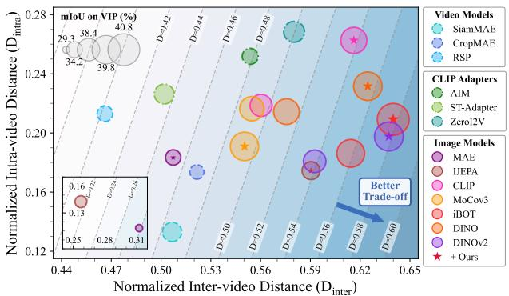

先说结论。这是今天最贴近“通用视觉自监督”的主线：把现有 DINO/MAE/CLIP 类 image features 稳定迁移到 video representation。 把 image SSL backbone 向 video 表征迁移时的冲突明确建模为 intra-video consistency 与 inter-video separability 的 trade-off，而不是简单加 temporal module 后全量微调。
Figureure 2 · Overview of our image-to-video transfer learning frameworkFigure 2. Overview of our image-to-video transfer learning framework. Two frames are sampled from each video to construct a cyclic sequence. A frozen image-pretrained encoder extracts patch-level features, which are then mapped by a learnable projection layer. The projection layer is trained with a temporal cycle-consistency loss and a semantic separability constraint for representation adjustment, thereby promoting a better trade-off between intra-video temporal consistency and inter-video semantic separability.这张图概括 From Static to Dynamic 的整体方法流程。阅读时先看模块之间传递的训练信号，再看作者如何把目标拆成可优化的子问题。

Figureure 1 · Comparison of video representation quality with recent visual represenFigure 1. Comparison of video representation quality with recent visual representation learning models on the Kinetics-400 [55] validation set. Favorable video representations should exhibit strong intravideo temporal consistency (lower intra-video distance $D _ { i n t r a } )$ and clear inter-video semantic separability (higher inter-video distance $D _ { i n t e r } )$ jointly, yet the two objectives often compete since the two distances co-vary. Applying our method to image-pretrained models leads to consistent improvements on the margin of inter- and intra-video distance $D = D _ { i n t e r } - \gamma D _ { i n t r a }$ (detailed in Sec. 5.3), indicating a better trade-off between the two properties, and therefore leading to improved performance on video downstream tasks.这张图/表用于判断 From Static to Dynamic 的实验收益来自哪里。重点看替换、消融或跨模型设置下趋势是否一致，而不是只看单个最高分。
核心问题
这是今天最贴近“通用视觉自监督”的主线：把现有 DINO/MAE/CLIP 类 image features 稳定迁移到 video representation。